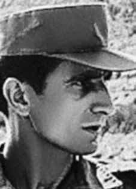

Carlos
Lamarca
BIOGRAFIA
“Ousar lutar, ousar vencer”. Era assim que Carlos Lamarca, um dos principais lutadores da oposição armada à ditadura no Brasil, terminava seus escritos. Ele entrou na carreira militar bastante cedo e, alguns anos após o golpe, chegou a ser capitão do Exército brasileiro. Mas, em 1969, já engajado na luta armada contra o regime, desertou e foi expulso da corporação no ano seguinte. Considerado em certo momento o inimigo número um do regime, foi duramente perseguido e fuzilado pelos militares.
Um momento marcante de sua formação foi em 1962, quando foi enviado para integrar as forças de paz da ONU na região de Gaza (Palestina), de onde voltou 18 meses depois. Uma experiência que marcou sua vida e sensibilizou o jovem contra as injustiças sociais.
Em 1967, foi promovido a capitão e, dois anos depois, já militante da organização que daria origem à Vanguarda Popular Revolucionária (VPR), organizou um grupo de militares do 4º Regimento de Infantaria para desertarem daquela unidade, levando consigo 63 fuzis e metralhadoras leves que deveriam servir para a luta armada contra a ditadura.
Para manter a segurança da família, Lamarca mandou a mulher e os dois filhos para Cuba, onde viveram por dez anos. Em 1959, ele havia se casado secretamente com Maria Pavan, sua irmã de criação, que já esperava o primeiro filho do casal.
Na VPR, conheceu Iara Iavelberg, por quem se apaixonou imediatamente. Os dois passaram a viver juntos em diversos aparelhos pelo país. As cartas de amor que trocaram nesse período são conhecidas, assim como o famoso diário do guerrilheiro, com textos dirigidos a ela.
Dentre suas ações contra a ditadura, está o sequestro do embaixador suíço Giovanni Bucher, em 1970, que resultou na libertação de 70 presos políticos dos porões da ditadura, além de vários assaltos a bancos para financiar as ações do grupo armado. Viveu quase um ano clandestino em São Paulo, participando de ações de guerrilha urbana, até se instalar no Vale do Ribeira, com um reduzido grupo de militantes, para realizar treinamentos militares.
O local foi descoberto pelos órgãos de segurança em abril de 1970 e cercado por tropas do Exército e da Polícia Militar. Uma gigantesca operação de cerco se prolongou por 41 dias, mas, após dois choques armados, o pequeno grupo guerrilheiro, sob a liderança do capitão rebelde, conseguiu escapar rumo a São Paulo.
Em março de 1971, seis meses antes de sua morte, desligou-se da VPR para se integrar ao Movimento Revolucionário 8 de Outubro (MR-8), que o deslocou para o sertão da Bahia, no município de Brotas de Macaúbas, com a finalidade de estabelecer uma base da organização naquela região.
Em 17 de setembro de 1971, Lamarca foi fuzilado por integrantes da “Operação Pajuçara”, em Ipupiara, no interior da Bahia. Essa operação, iniciada em agosto de 1971, entrou para a história como uma das mais violentas, sobretudo em Buritis, que se tornou à época um verdadeiro campo de concentração, com torturas e assassinatos em praça pública, diante da população. Lamarca tinha 34 anos quando morreu.
Mais de 30 anos depois, em 2007, a Comissão de Anistia do Ministério da Justiça concedeu a patente de coronel do Exército a Carlos Lamarca e o status de perseguidos políticos à sua primeira esposa, Maria Pavan Lamarca, e a seus dois filhos, que passaram a ter direito a pensão e indenização. Em 2010, entretanto, acatando ação do Clube Militar, a juíza Cláudia Maria Pereira Bastos Neiva suspendeu a decisão da Comissão de Anistia. A questão continua indefinida.
Em 1980, Emiliano José e Oldack Miranda escreveram a biografia “Lamarca: o capitão da guerrilha”. E em 1994 o diretor Sérgio Rezende lançou o filme Lamarca, baseado no livro.
Trecho de carta de Lamarca a seus filhos
“Brasil, 26 de julho de 1969
Aos meus filhos
Vivo falando de vocês com meus companheiros, eles estão longe dos filhos também e falam nos filhos deles. Um só é o desejo de todos nós, é que nossos filhos sejam revolucionários. O que é um revolucionário? É toda a pessoa que ama todos os povos, ama a Humanidade, tem uma imensa capacidade de amar, ama a justiça, a igualdade. Mas ele tem de odiar também, odiar os que impedem que o revolucionário ame, porque é uma necessidade amar. Odiar aos que odeiam o povo, a Humanidade, a justiça social. Odiar aos que dominam e exploram o povo, odiar aos que corrompem, ameaçam e alienam as mentes, aos que degradam a Humanidade, aos injustos, falsos, demagogos, covardes”
“Brasil, 26 de julho de 1969
Aos meus filhos
Vivo falando de vocês com meus companheiros, eles estão longe dos filhos também e falam nos filhos deles. Um só é o desejo de todos nós, é que nossos filhos sejam revolucionários. O que é um revolucionário? É toda a pessoa que ama todos os povos, ama a Humanidade, tem uma imensa capacidade de amar, ama a justiça, a igualdade. Mas ele tem de odiar também, odiar os que impedem que o revolucionário ame, porque é uma necessidade amar. Odiar aos que odeiam o povo, a Humanidade, a justiça social. Odiar aos que dominam e exploram o povo, odiar aos que corrompem, ameaçam e alienam as mentes, aos que degradam a Humanidade, aos injustos, falsos, demagogos, covardes”
Trecho de cartas de Lamarca a Iara:
“Sonhei com você. Acordei num misto de alegria e tristeza – compreendi que te desejava. (…) Sinto-me oco. Esse estado não posso superar, o que posso fazer? No fim, um cocô atolado”.
“Sonhando com você, acordo no meio da noite e volto a sonhar. Sonhei com você até nas vias de fato, pode? Ora, por que o sonho? Necessidade sexual não pode ser só, já sonhei inclusive nesse nível com você. Como, até mesmo dormindo contigo sonhei, só posso concluir que a minha cuca é mais complicada do que eu pensava”.
“Sonhei com você. Acordei num misto de alegria e tristeza – compreendi que te desejava. (…) Sinto-me oco. Esse estado não posso superar, o que posso fazer? No fim, um cocô atolado”.
“Sonhando com você, acordo no meio da noite e volto a sonhar. Sonhei com você até nas vias de fato, pode? Ora, por que o sonho? Necessidade sexual não pode ser só, já sonhei inclusive nesse nível com você. Como, até mesmo dormindo contigo sonhei, só posso concluir que a minha cuca é mais complicada do que eu pensava”.
Trecho de carta de Lamarca a sua esposa:
“Brasil, 26 de julho de 1969
Minha querida esposa,
O meu pensamento vive voltado para essa ilha, constantemente, mas o dia de hoje se reveste de especial atenção, de meditação, o pensamento que aflora é iniciar – cumpre iniciar a luta. Ainda não recebi notícias.
A organização a que pertenço, a Vanguarda Armada Revolucionária – Palmares (VAR-Palmares), que nasceu da fusão da Vanguarda Popular Revolucionária com o Comando de Libertação Nacional, não tem canal de comunicação com a ilha, só quem tem é o Marighella.
Aí pensam que ele é o líder e o comandante da revolução no Brasil. É engano, primeiro porque não tem qualidades para isso, é egoísta, personalista e desleal, e segundo porque a organização dele (não tem nome – usa-se o nome dele) é mal estruturada; muitos militantes dele estão passando para a nossa organização.
A concepção brasileira da luta é a seguinte: quem imprime a luta no campo são as cidades. O fundamental é a luta no campo, mas, se ela iniciar e for derrotada no campo, a organização bem estruturada nas grandes cidades, dentro de pouco tempo, pode reiniciar. A nossa organização é a única que está bem estruturada nas grandes cidade e já começamos a organizar no campo. Antes não havia nada e nenhuma organização sozinha poderia levar o processo à frente – agora vamos.”
“Brasil, 26 de julho de 1969
Minha querida esposa,
O meu pensamento vive voltado para essa ilha, constantemente, mas o dia de hoje se reveste de especial atenção, de meditação, o pensamento que aflora é iniciar – cumpre iniciar a luta. Ainda não recebi notícias.
A organização a que pertenço, a Vanguarda Armada Revolucionária – Palmares (VAR-Palmares), que nasceu da fusão da Vanguarda Popular Revolucionária com o Comando de Libertação Nacional, não tem canal de comunicação com a ilha, só quem tem é o Marighella.
Aí pensam que ele é o líder e o comandante da revolução no Brasil. É engano, primeiro porque não tem qualidades para isso, é egoísta, personalista e desleal, e segundo porque a organização dele (não tem nome – usa-se o nome dele) é mal estruturada; muitos militantes dele estão passando para a nossa organização.
A concepção brasileira da luta é a seguinte: quem imprime a luta no campo são as cidades. O fundamental é a luta no campo, mas, se ela iniciar e for derrotada no campo, a organização bem estruturada nas grandes cidades, dentro de pouco tempo, pode reiniciar. A nossa organização é a única que está bem estruturada nas grandes cidade e já começamos a organizar no campo. Antes não havia nada e nenhuma organização sozinha poderia levar o processo à frente – agora vamos.”
“Dare to fight, dare to win”. This was how Carlos Lamarca, one of the main fighters of the armed opposition to the dictatorship in Brazil, ended his writings. He entered his military career quite early and, a few years after the coup, became a captain in the Brazilian Army. But, in 1969, already engaged in the armed struggle against the regime, he deserted and was expelled from the corporation the following year. Considered at one point the regime's number one enemy, he was harshly persecuted and shot by the military.
A memorable moment in his training was in 1962, when he was sent to join the UN peacekeeping forces in the Gaza region (Palestine), from where he returned 18 months later. An experience that marked his life and sensitized the young man against social injustices.
In 1967, he was promoted to captain and, two years later, already a member of the organization that would give rise to the Vanguarda Popular Revolucionária (VPR), he organized a group of soldiers from the 4th Infantry Regiment to desert that unit, taking with them 63 rifles and light machine guns that were supposed to be used for the armed struggle against the dictatorship.
To keep his family safe, Lamarca sent his wife and two children to Cuba, where they lived for ten years. In 1959, he had secretly married Maria Pavan, his foster sister, who was already expecting the couple's first child.
At VPR, he met Iara Iavelberg, with whom he immediately fell in love. The two began to live together in different apartments across the country. The love letters they exchanged during this period are known, as is the guerrilla fighter's famous diary, with texts addressed to her.
Among his actions against the dictatorship was the kidnapping of the Swiss ambassador Giovanni Bucher, in 1970, which resulted in the release of 70 political prisoners from the dictatorship's basements, in addition to several bank robberies to finance the armed group's actions. He lived almost a year clandestinely in São Paulo, participating in urban guerrilla actions, until he settled in Vale do Ribeira, with a small group of militants, to carry out military training.
The site was discovered by security agencies in April 1970 and surrounded by Army and Military Police troops. A gigantic siege operation lasted for 41 days, but, after two armed clashes, the small guerrilla group, under the leadership of the rebel captain, managed to escape towards São Paulo.
In March 1971, six months before his death, he left the VPR to join the Movimento Revolucionário 8 de Outubro (MR-8), which moved him to the backlands of Bahia, in the municipality of Brotas de Macaúbas, with the aim of establishing a base for the organization in that region.
On September 17, 1971, Lamarca was shot by members of “Operação Pajuçara”, in Ipupiara, in the interior of Bahia. This operation, which began in August 1971, went down in history as one of the most violent, especially in Buritis, which at the time became a true concentration camp, with torture and murders in public, in front of the population. Lamarca was 34 years old when he died.
More than 30 years later, in 2007, the Amnesty Commission of the Ministry of Justice granted the rank of Army colonel to Carlos Lamarca and the status of political persecution to his first wife, Maria Pavan Lamarca, and his two children, who became entitled to pension and compensation. In 2010, however, following the action of the Clube Militar, judge Cláudia Maria Pereira Bastos Neiva suspended the decision of the Amnesty Commission. The issue remains undefined.
In 1980, Emiliano José and Oldack Miranda wrote the biography “Lamarca: the guerrilla captain”. And in 1994, director Sérgio Rezende released the film Lamarca, based on the book.
Excerpt from Lamarca's letter to his children
“Brazil, July 26, 1969
To my children
I keep talking about you with my companions, they are far from their children too and they talk about their children. There is only one desire for all of us, and that is for our children to be revolutionaries. What is a revolutionary? It is every person who loves all people, loves Humanity, has an immense capacity to love, loves justice, equality. But he also has to hate, hate those who prevent the revolutionary from loving, because it is a necessity to love. Hating those who hate the people, humanity, social justice. Hate those who dominate and exploit the people, hate those who corrupt, threaten and alienate minds, those who degrade Humanity, those who are unjust, false, demagogues, cowards.”
“Brazil, July 26, 1969
To my children
I keep talking about you with my companions, they are far from their children too and they talk about their children. There is only one desire for all of us, and that is for our children to be revolutionaries. What is a revolutionary? It is every person who loves all people, loves Humanity, has an immense capacity to love, loves justice, equality. But he also has to hate, hate those who prevent the revolutionary from loving, because it is a necessity to love. Hating those who hate the people, humanity, social justice. Hate those who dominate and exploit the people, hate those who corrupt, threaten and alienate minds, those who degrade Humanity, those who are unjust, false, demagogues, cowards.”
Excerpt from letters from Lamarca to Iara:
"I dreamed of you. I woke up in a mix of joy and sadness – I understood that I wanted you. (…) I feel hollow. I can't overcome this state, what can I do? In the end, a stuck poo."
"Dreaming about you, I wake up in the middle of the night and dream again. I dreamed about you even in reality, right? Why the dream? Sexual need can't be just that, I've even dreamed about you on that level. Since, even sleeping with you, I dreamed, I can only conclude that my mind is more complicated than I thought."
"I dreamed of you. I woke up in a mix of joy and sadness – I understood that I wanted you. (…) I feel hollow. I can't overcome this state, what can I do? In the end, a stuck poo."
"Dreaming about you, I wake up in the middle of the night and dream again. I dreamed about you even in reality, right? Why the dream? Sexual need can't be just that, I've even dreamed about you on that level. Since, even sleeping with you, I dreamed, I can only conclude that my mind is more complicated than I thought."
Excerpt from Lamarca's letter to his wife:
“Brazil, July 26, 1969
My dear wife,
My thoughts are constantly focused on that island, but today is a day of special attention, of meditation, the thought that emerges is to start – we must start the fight. I haven't received any news yet.
The organization I belong to, the Vanguarda Armada Revolucionária – Palmares (VAR-Palmares), which was born from the merger of the Vanguarda Popular Revolucionária with the National Liberation Command, does not have a communication channel with the island, the only one that does is Marighella.
Then they think that he is the leader and commander of the revolution in Brazil. It's a mistake, firstly because he doesn't have the qualities for it, he's selfish, personalistic and disloyal, and secondly because his organization (it doesn't have a name – his name is used) is poorly structured; Many of his activists are joining our organization.
The Brazilian conception of the struggle is as follows: the cities are the ones who carry out the struggle in the countryside. The fundamental thing is the fight in the field, but, if it starts and is defeated in the field, the well-structured organization in the big cities, within a short time, can restart. Our organization is the only one that is well structured in large cities and we have already started organizing in the countryside. Before there was nothing and no single organization could move the process forward – now let’s go.”
“Brazil, July 26, 1969
My dear wife,
My thoughts are constantly focused on that island, but today is a day of special attention, of meditation, the thought that emerges is to start – we must start the fight. I haven't received any news yet.
The organization I belong to, the Vanguarda Armada Revolucionária – Palmares (VAR-Palmares), which was born from the merger of the Vanguarda Popular Revolucionária with the National Liberation Command, does not have a communication channel with the island, the only one that does is Marighella.
Then they think that he is the leader and commander of the revolution in Brazil. It's a mistake, firstly because he doesn't have the qualities for it, he's selfish, personalistic and disloyal, and secondly because his organization (it doesn't have a name – his name is used) is poorly structured; Many of his activists are joining our organization.
The Brazilian conception of the struggle is as follows: the cities are the ones who carry out the struggle in the countryside. The fundamental thing is the fight in the field, but, if it starts and is defeated in the field, the well-structured organization in the big cities, within a short time, can restart. Our organization is the only one that is well structured in large cities and we have already started organizing in the countryside. Before there was nothing and no single organization could move the process forward – now let’s go.”
“Atrévete a luchar, atrévete a ganar”. Así terminaba sus escritos Carlos Lamarca, uno de los principales luchadores de la oposición armada a la dictadura en Brasil. Inició su carrera militar bastante temprano y, unos años después del golpe, se convirtió en capitán del ejército brasileño. Pero, en 1969, ya comprometido en la lucha armada contra el régimen, desertó y fue expulsado de la corporación al año siguiente. Considerado en un momento el enemigo número uno del régimen, fue duramente perseguido y fusilado por los militares.
Un momento memorable de su formación fue en 1962, cuando fue enviado a unirse a las fuerzas de paz de la ONU en la región de Gaza (Palestina), de donde regresó 18 meses después. Una experiencia que marcó su vida y sensibilizó al joven contra las injusticias sociales.
En 1967 fue ascendido a capitán y, dos años después, ya miembro de la organización que daría origen a la Vanguarda Popular Revolucionária (VPR), organizó un grupo de soldados del 4º Regimiento de Infantería para desertar de esa unidad, llevándose consigo 63 fusiles y ametralladoras ligeras que supuestamente serían utilizadas para la lucha armada contra la dictadura.
Para mantener a su familia a salvo, Lamarca envió a su esposa y sus dos hijos a Cuba, donde vivieron durante diez años. En 1959 se casó en secreto con María Pavan, su hermana adoptiva, que ya estaba esperando el primer hijo de la pareja.
En VPR conoció a Iara Iavelberg, de quien se enamoró inmediatamente. Los dos empezaron a vivir juntos en distintos apartamentos por todo el país. Son conocidas las cartas de amor que intercambiaron durante este período, así como el famoso diario del guerrillero, con textos dirigidos a ella.
Entre sus acciones contra la dictadura estuvo el secuestro del embajador suizo Giovanni Bucher, en 1970, que resultó en la liberación de 70 presos políticos de los sótanos de la dictadura, además de varios robos a bancos para financiar las acciones del grupo armado. Vivió casi un año clandestinamente en São Paulo, participando en acciones de guerrilla urbana, hasta que se instaló en Vale do Ribeira, con un pequeño grupo de militantes, para realizar entrenamiento militar.
El sitio fue descubierto por organismos de seguridad en abril de 1970 y rodeado por tropas del Ejército y la Policía Militar. Una gigantesca operación de asedio duró 41 días, pero, tras dos enfrentamientos armados, el pequeño grupo guerrillero, bajo el liderazgo del capitán rebelde, logró escapar hacia São Paulo.
En marzo de 1971, seis meses antes de su muerte, abandonó el VPR para incorporarse al Movimento Revolucionário 8 de Octubre (MR-8), que lo trasladó al interior de Bahía, en el municipio de Brotas de Macaúbas, con el objetivo de establecer una base para la organización en esa región.
El 17 de septiembre de 1971, Lamarca fue baleado por miembros de la “Operação Pajuçara”, en Ipupiara, en el interior de Bahía. Esta operación, iniciada en agosto de 1971, pasó a la historia como una de las más violentas, especialmente en Buritis, que en su momento se convirtió en un auténtico campo de concentración, con torturas y asesinatos en público, delante de la población. Lamarca tenía 34 años cuando murió.
Más de 30 años después, en 2007, la Comisión de Amnistía del Ministerio de Justicia otorgó el rango de coronel del Ejército a Carlos Lamarca y el estatus de persecución política a su primera esposa, María Paván Lamarca, y a sus dos hijos, quienes pasaron a tener derecho a pensión e indemnización. Sin embargo, en 2010, tras la acción del Clube Militar, la jueza Cláudia Maria Pereira Bastos Neiva suspendió la decisión de la Comisión de Amnistía. La cuestión sigue sin definirse.
En 1980, Emiliano José y Oldack Miranda escribieron la biografía “Lamarca: el capitán guerrillero”. Y en 1994, el director Sérgio Rezende estrenó la película Lamarca, basada en el libro.
Extracto de la carta de Lamarca a sus hijos
“Brasil, 26 de julio de 1969
a mis hijos
Sigo hablando de ti con mis compañeros, ellos también están lejos de sus hijos y hablan de sus hijos. Sólo hay un deseo para todos nosotros y es que nuestros hijos sean revolucionarios. ¿Qué es un revolucionario? Es cada persona que ama a todas las personas, ama a la Humanidad, tiene una inmensa capacidad de amar, ama la justicia, la igualdad. Pero también tiene que odiar, odiar a quienes impiden al revolucionario amar, porque amar es una necesidad. Odiar a quienes odian al pueblo, a la humanidad, a la justicia social. Odio a quienes dominan y explotan a los pueblos, odia a quienes corrompen, amenazan y alienan las mentes, a quienes degradan a la Humanidad, a quienes son injustos, falsos, demagogos, cobardes”.
“Brasil, 26 de julio de 1969
a mis hijos
Sigo hablando de ti con mis compañeros, ellos también están lejos de sus hijos y hablan de sus hijos. Sólo hay un deseo para todos nosotros y es que nuestros hijos sean revolucionarios. ¿Qué es un revolucionario? Es cada persona que ama a todas las personas, ama a la Humanidad, tiene una inmensa capacidad de amar, ama la justicia, la igualdad. Pero también tiene que odiar, odiar a quienes impiden al revolucionario amar, porque amar es una necesidad. Odiar a quienes odian al pueblo, a la humanidad, a la justicia social. Odio a quienes dominan y explotan a los pueblos, odia a quienes corrompen, amenazan y alienan las mentes, a quienes degradan a la Humanidad, a quienes son injustos, falsos, demagogos, cobardes”.
Extracto de cartas de Lamarca a Iara:
"Soñé contigo. Me desperté en una mezcla de alegría y tristeza, entendí que te quería. (...) Me siento vacío. No puedo superar este estado, ¿qué puedo hacer? Al final, una caca estancada".
"Soñando contigo, me despierto en medio de la noche y sueño de nuevo. Soñé contigo incluso en la realidad, ¿verdad? ¿Por qué el sueño? La necesidad sexual no puede ser solo eso, incluso he soñado contigo en ese nivel. Dado que, incluso durmiendo contigo, soñé, sólo puedo concluir que mi mente es más complicada de lo que pensaba".
"Soñé contigo. Me desperté en una mezcla de alegría y tristeza, entendí que te quería. (...) Me siento vacío. No puedo superar este estado, ¿qué puedo hacer? Al final, una caca estancada".
"Soñando contigo, me despierto en medio de la noche y sueño de nuevo. Soñé contigo incluso en la realidad, ¿verdad? ¿Por qué el sueño? La necesidad sexual no puede ser solo eso, incluso he soñado contigo en ese nivel. Dado que, incluso durmiendo contigo, soñé, sólo puedo concluir que mi mente es más complicada de lo que pensaba".
Extracto de la carta de Lamarca a su esposa:
“Brasil, 26 de julio de 1969
Mi querida esposa,
Mis pensamientos están constantemente enfocados en esa isla, pero hoy es un día de especial atención, de meditación, el pensamiento que surge es el de empezar, hay que empezar la lucha. Aún no he recibido ninguna noticia.
La organización a la que pertenezco, la Vanguarda Armada Revolucionária – Palmares (VAR-Palmares), que nació de la fusión de la Vanguarda Popular Revolucionária con el Comando de Liberación Nacional, no tiene un canal de comunicación con la isla, la única que sí lo tiene es Marighella.
Entonces piensan que es el líder y comandante de la revolución en Brasil. Es un error, primero porque no tiene cualidades para ello, es egoísta, personalista y desleal, y segundo porque su organización (no tiene nombre, se usa su nombre) está mal estructurada; Muchos de sus activistas se están uniendo a nuestra organización.
La concepción brasileña de la lucha es la siguiente: las ciudades son quienes llevan a cabo la lucha en el campo. Lo fundamental es la lucha en el campo, pero, si se inicia y se derrota en el campo, la organización bien estructurada en las grandes ciudades, en poco tiempo, puede reiniciarse. Nuestra organización es la única que está bien estructurada en las grandes ciudades y ya hemos empezado a organizarnos en el campo. Antes no había nada ni ninguna organización que pudiera hacer avanzar el proceso, ahora vamos”.
“Brasil, 26 de julio de 1969
Mi querida esposa,
Mis pensamientos están constantemente enfocados en esa isla, pero hoy es un día de especial atención, de meditación, el pensamiento que surge es el de empezar, hay que empezar la lucha. Aún no he recibido ninguna noticia.
La organización a la que pertenezco, la Vanguarda Armada Revolucionária – Palmares (VAR-Palmares), que nació de la fusión de la Vanguarda Popular Revolucionária con el Comando de Liberación Nacional, no tiene un canal de comunicación con la isla, la única que sí lo tiene es Marighella.
Entonces piensan que es el líder y comandante de la revolución en Brasil. Es un error, primero porque no tiene cualidades para ello, es egoísta, personalista y desleal, y segundo porque su organización (no tiene nombre, se usa su nombre) está mal estructurada; Muchos de sus activistas se están uniendo a nuestra organización.
La concepción brasileña de la lucha es la siguiente: las ciudades son quienes llevan a cabo la lucha en el campo. Lo fundamental es la lucha en el campo, pero, si se inicia y se derrota en el campo, la organización bien estructurada en las grandes ciudades, en poco tiempo, puede reiniciarse. Nuestra organización es la única que está bien estructurada en las grandes ciudades y ya hemos empezado a organizarnos en el campo. Antes no había nada ni ninguna organización que pudiera hacer avanzar el proceso, ahora vamos”.
CIRCUNSTÂNCIAS DA MORTE
Carlos Lamarca foi morto por agentes do Estado brasileiro no dia 17 de setembro de 1971, em Ipupiara (BA), na região de Brotas de Macaúbas, sertão da Bahia, na chamada “Operação Pajussara”, que contou com diversas forças de segurança em uma ação conjunta para capturar o “Capitão da Guerrilha”, como ficou conhecido o líder da VPR e, posteriormente, do MR-8.
O comandante do DOI-CODI de Salvador e Chefe da 2ª Seção do Estado-Maior da 6ª Região Militar, major Nilton de Albuquerque Cerqueira, reuniu um efetivo de mais de duzentos agentes militares e policiais, de órgãos como o Departamento de Ordem Política e Social de São Paulo (DOPS/SP), Centro de Informações e Segurança da Aeronáutica (CISA), Centro de Informações do Exército (CIE), Centro de Informações da Marinha (CENIMAR), Força Aérea Brasileira (FAB), Departamento de Polícia Federal da Bahia (DPF/BA) e Polícia Militar da Bahia (PM/BA), que invadiram a região de Buriti Cristalino, no dia 28 de agosto de 1971, em busca de Lamarca.
O episódio, uma das maiores ofensivas dos órgãos de repressão da ditadura brasileira, marcou, com o seu desfecho, o início de intensa disputa pela memória e pela história de Lamarca, que foi um dos principais líderes da luta armada contra a ditadura. As investigações realizadas pelos órgãos do Estado brasileiro permitiram constatar que era falsa a versão divulgada oficialmente à época dos fatos. De acordo com essa versão, Lamarca teria morrido em um tiroteio travado contra as forças de segurança. Foi morto, com Lamarca, José Campos Barreto, o Zequinha, que havia sido uma importante liderança sindical em Osasco (SP), nas greves de 1968.
A versão dos acontecimentos que culminaram na morte dos dois ganhou força à época. Os jornais noticiaram a morte de Lamarca como uma grande vitória das forças de segurança contra a “subversão” ao regime militar. O Jornal do Brasil, por exemplo, na edição de domingo, 19 de setembro de 1971, destacava que, com a morte de Lamarca, chegava ao fim a “trilogia de líderes subversivos brasileiros”, em alusão aos militantes Carlos Marighella e Joaquim Câmara Ferreira, mortos em 1969 e 1970, respectivamente. A Tarde, periódico publicado em Salvador, reforçou a versão divulgada pelo Exército, destacando, na edição de 20 de setembro, que não houve feridos no tiroteio travado entre Lamarca e os agentes das forças de segurança, “apesar de ter Carlos Lamarca puxado o revólver, na tentativa de evitar que agentes de segurança se aproximassem dele”. O Globo registrou que a “morte de Lamarca representava muito mais que a eliminação de um líder terrorista, significa o fim de um mito”.
A partir de pesquisas realizadas em arquivos como o do Serviço Nacional de Informações e de outros órgãos da repressão, de novas informações surgidas de depoimentos, além do parecer elaborado pelos peritos Celso Nenevê e Nelson Massini, após a exumação dos restos mortais de Carlos Lamarca, em 18 de junho de 1996, ficou evidente que a versão divulgada à época dos fatos não se sustentava. A operação militar que logrou localizar e matar Carlos Lamarca se inseriu em um complexo conjunto de ações militares. As forças de segurança recorreram a um conjunto de ações irregulares e ilegais, baseadas na prática de prisões arbitrárias e ilegais, tortura e execuções.
O caminho percorrido por esses agentes do Estado até a execução de Lamarca foi marcado por perseguições, tortura e mortes, como as de Iara Iavelberg, José Campos Barreto (Zequinha), Luiz Antônio Santa Bárbara, Otoniel Campos Barreto, Nilda Carvalho Cunha e Esmeraldina Carvalho Cunha. A investida de agentes do DOI-CODI de Salvador sobre o apartamento em que se encontrava Iara Iavelberg, companheira de Lamarca, em 20 de agosto de 1971, que resultou na morte dela e possibilitou a prisão de militantes que estavam no local, foi etapa decisiva na busca por Lamarca. No passo seguinte, o Comandante do DOI-CODI e chefe da 2ª Seção do Estado-Maior da 6ª Região Militar, major Nilton de Albuquerque Cerqueira, após reunir um grande aparato militar e policial, invadiu a região de Buriti Cristalino, em 28 de agosto de 1971.
Zequinha Barreto havia levado Lamarca para esta região, Buriti Cristalino, em Brotas de Macaúbas (BA), sua terra natal. Seu pai, o lavrador José de Araújo Barreto, então com 64 anos, tinha uma propriedade no local, e Zequinha e seus familiares eram conhecidos de todos. Recém integrados ao MR-8, vindos da VPR, Zequinha havia pedido autorização para levar Lamarca para lá, onde pretendiam estabelecer as bases para uma futura guerrilha rural. Em poucas semanas, no entanto, foram localizados. No dia 28 de agosto, na invasão de policiais do DOPS-SP, comandados pelo delegado Sérgio Fernando Paranhos Fleury, e da equipe do CISA à propriedade da família Barreto, Olderico Campos Barreto, um dos irmãos de Zequinha, foi ferido no rosto; outro irmão, Otoniel, de 20 anos, foi morto com vários tiros.
Os agentes da repressão buscavam por Lamarca e, para isso, torturaram Olderico Campos Barreto, agrediram sua família e aterrorizaram os vizinhos e outras pessoas da localidade. Com o barulho de tiros, helicópteros e deslocamento de tropas, Lamarca e Zequinha abandonaram o acampamento onde se encontravam, a cerca de dois quilômetros da casa dos Barreto. Empreenderam fuga pelo sertão durante 20 dias. Exaustos, feridos e cada vez mais cercados pelas tropas da operação Pajussara, chegaram ao pequeno povoado de Pintada, em Ipupiara (BA).
Moradores do vilarejo contaram ter visto Zequinha carregando nos ombros o ex-capitão Lamarca, que se encontrava bastante debilitado. Segundo Olival Barreto, irmão mais novo de Zequinha, o paradeiro dos militantes foi informado pelo juiz do Fórum de Brotas de Macaúbas, Antônio Barbosa, às tropas do Exército: “[…] a gente só ficava ouvindo, ó, Zequinha e Lamarca passou em tal lugar, passaram em Ibotirama, passaram no Mocambo, passaram não sei aonde. Só que, por infelicidade, Zequinha foi passar num local que chama Três Reses, onde têm parentes nossos, e um infeliz, lá dos Três Reses, que é até primo da gente… Então, esse rapaz [Antônio de Virgílio] foi avisar, em Brotas, que Zequinha tinha passado lá, com o Lamarca. Como o Exército tinha oferecido esses prêmios, dinheiro, pra quem denunciasse, esse rapaz foi avisar em Brotas. E o juiz [Antônio Barbosa], lá em Brotas, pega um carro e vai até Seabra, e vai ligar, lá pra 6ª Região do Exército, pra voltarem. Aí, eles já voltaram com certeza de que eles já estavam lá.”
Na tarde do dia 17 de setembro, enquanto descansavam à sombra de uma baraúna, árvore típica da região, Lamarca e Zequinha foram surpreendidos pela tropa comandada pelo major Nilton de Albuquerque Cerqueira. O relatório da Operação Pajussara, elaborado pela 2ª Seção do Quartel-General da 6ª Região Militar do IV Exército, sugere que Lamarca e Zequinha, ao serem finalmente localizados, não ofereceram resistência: “O segundo [Lamarca] levantou-se, tentando também correr, carregando um saco. Esse foi abatido quinze metros à frente, caindo no solo, enquanto o que dera o alarme [Zequinha Barreto], apesar de ferido, prosseguiu na fuga. […] Pouco adiante, ‘Jessé’ [Zequinha Barreto] virou-se para o elemento que o perseguia, atirando-lhe uma pedra, recebendo então a última rajada. […] A condição física do combatente de A G, dos quadros, inclusive dos oficiais superiores, é também base para o sucesso da operação. […]” Esta afirmativa é baseada também no estado físico em que se apresentavam os dois terroristas ao final da ação, totalmente esgotados.
Lamarca foi executado por agentes do Estado brasileiro com sete tiros, disparados de diversas direções, inclusive por trás, o que atesta que foi cercado. Segundo moradores, seu corpo e o de Zequinha Barreto foram colocados à exposição pública na praça de Brotas de Macaúbas, onde foram chutados por militares e policiais, que se gabavam de tê-los executado. Depois, foram colocados em um helicóptero e levados para a capital, Salvador, onde foram sepultados, no cemitério do Campo Santo.
Diligência da CNV a Salvador, entre os dias 4 e 5 de agosto de 2014, localizou funcionários do cemitério responsáveis pelo sepultamento de Lamarca. Passadas décadas, eles lembravam com precisão do enterro de Lamarca, tamanho o aparato repressivo que cercou o episódio. Um deles, que colocou uma lápide na sepultura de Lamarca, foi repreendido por isso. Eles contaram que por dois anos, até a exumação de seus restos mortais, em setembro de 1973, quando foram trasladados para o Rio de Janeiro, agentes se revezaram, vigiando o túmulo, para evitar que ali virasse um local de reverência. O coronel Luiz Arthur de Carvalho, Delegado Regional da Polícia Federal, foi o responsável pelos sepultamentos de Lamarca, Zequinha Barreto e seu irmão, Otoniel.
Em 1996, foi feita nova exumação, para que fosse feita perícia, por solicitação da família. O parecer do perito Celso Nenevê e do legista Nelson Massini foi decisivo para o processo de Lamarca (038/96) voltar à pauta da CEMDP. Segundo os peritos, Lamarca, cercado, recebeu tiros de ambos os lados, inclusive por trás, sendo que o tiro fatal foi de cima para baixo. O que nos leva à presunção de que, provavelmente abatido pelas costas, caído, foi mortalmente atingido. O processo de Lamarca foi deferido em 11 de setembro de 1996, com parecer de Suzana Keninger Lisbôa, por 5 votos a favor e 2 contra.
Foi decisiva para o caso a interpretação do artigo 4º da Lei nº 9.140/95, que considerou que o legislador, ao se referir às mortes “em dependências policiais ou assemelhadas”, buscava definir que a pessoa em questão estava na esfera do domínio dos autores dos crimes. Sob o domínio de agentes do Estado brasileiro, Lamarca e Zequinha Barreto deveriam ter sido detidos, nunca executados. A morte de Carlos Lamarca é também relatada no capítulo 13, “Casos Emblemáticos”, deste Relatório.
Carlos Lamarca was killed by agents of the Brazilian State on September 17, 1971, in Ipupiara (BA), in the region of Brotas de Macaúbas, backlands of Bahia, in the so-called “Operation Pajussara”, which involved several security forces in a joint action to capture the “Guerrilla Captain”, as the leader of the VPR and, later, the MR-8 became known.
The commander of the DOI-CODI of Salvador and Chief of the 2nd Section of the General Staff of the 6th Military Region, Major Nilton de Albuquerque Cerqueira, brought together a force of more than two hundred military and police agents, from bodies such as the Department of Political and Social Order of São Paulo (DOPS/SP), Air Force Information and Security Center (CISA), Army Information Center (CIE), Navy Information Center (CENIMAR), Brazilian Air Force (FAB), Bahia Federal Police Department (DPF/BA) and Bahia Military Police (PM/BA), who invaded the Buriti Cristalino region, on August 28, 1971, in search of Lamarca.
The episode, one of the biggest offensives by the Brazilian dictatorship's repressive bodies, marked, with its outcome, the beginning of an intense dispute over the memory and history of Lamarca, who was one of the main leaders of the armed struggle against the dictatorship. The investigations carried out by Brazilian State bodies revealed that the version officially released at the time of the events was false. According to this version, Lamarca died in a shootout against security forces. José Campos Barreto, known as Zequinha, was killed with Lamarca, who had been an important union leader in Osasco (SP), in the 1968 strikes.
The version of events that culminated in their deaths gained strength at the time. Newspapers reported Lamarca's death as a great victory for the security forces against “subversion” to the military regime. Jornal do Brasil, for example, in the edition of Sunday, September 19, 1971, highlighted that, with Lamarca's death, the “trilogy of Brazilian subversive leaders” came to an end, in allusion to the militants Carlos Marighella and Joaquim Câmara Ferreira, killed in 1969 and 1970, respectively. Tarde, a newspaper published in Salvador, reinforced the version released by the Army, highlighting, in the September 20th edition, that there were no injuries in the shootout between Lamarca and security force agents, “despite Carlos Lamarca pulling out his revolver, in an attempt to prevent security agents from approaching him.” Globo noted that “Lamarca’s death represented much more than the elimination of a terrorist leader, it means the end of a myth.”
Based on research carried out in archives such as that of the National Information Service and other repressive bodies, new information arising from testimonies, in addition to the opinion prepared by experts Celso Nenevê and Nelson Massini, after the exhumation of Carlos Lamarca's mortal remains, on June 18, 1996, it became clear that the version published at the time of the events was not sustainable. The military operation that managed to locate and kill Carlos Lamarca was part of a complex set of military actions. The security forces resorted to a series of irregular and illegal actions, based on the practice of arbitrary and illegal arrests, torture and executions.
The path taken by these State agents until Lamarca's execution was marked by persecution, torture and deaths, such as those of Iara Iavelberg, José Campos Barreto (Zequinha), Luiz Antônio Santa Bárbara, Otoniel Campos Barreto, Nilda Carvalho Cunha and Esmeraldina Carvalho Cunha. The attack by DOI-CODI agents from Salvador on the apartment where Iara Iavelberg, Lamarca's companion, was staying, on August 20, 1971, which resulted in her death and led to the arrest of militants who were there, was a decisive step in the search for Lamarca. In the next step, the Commander of DOI-CODI and head of the 2nd Section of the General Staff of the 6th Military Region, Major Nilton de Albuquerque Cerqueira, after bringing together a large military and police apparatus, invaded the Buriti Cristalino region, on August 28, 1971.
Zequinha Barreto had taken Lamarca to this region, Buriti Cristalino, in Brotas de Macaúbas (BA), his homeland. His father, farmer José de Araújo Barreto, then 64 years old, had a property there, and Zequinha and his family were known to everyone. Newly integrated into the MR-8, coming from VPR, Zequinha had requested authorization to take Lamarca there, where they intended to establish the bases for a future rural guerrilla. Within a few weeks, however, they were located. On August 28, during the invasion by DOPS-SP police officers, led by delegate Sérgio Fernando Paranhos Fleury, and the CISA team on the Barreto family property, Olderico Campos Barreto, one of Zequinha's brothers, was injured in the face; another brother, Otoniel, aged 20, was killed with several gunshots.
The repression agents were looking for Lamarca and, to do so, they tortured Olderico Campos Barreto, attacked his family and terrorized neighbors and other people in the locality. With the noise of gunshots, helicopters and the movement of troops, Lamarca and Zequinha abandoned the camp where they were, about two kilometers from the Barretos' house. They fled through the backlands for 20 days. Exhausted, injured and increasingly surrounded by troops from Operation Pajussara, they arrived at the small town of Pintada, in Ipupiara (BA).
Residents of the village said they saw Zequinha carrying former captain Lamarca, who was very weak, on his shoulders. According to Olival Barreto, Zequinha's younger brother, the whereabouts of the militants were informed by the judge of the Forum of Brotas de Macaúbas, Antônio Barbosa, to the Army troops: "[…] we just kept listening, oh, Zequinha and Lamarca passed by such a place, they passed by Ibotirama, they passed by Mocambo, I don't know where. But, unfortunately, Zequinha went to a place called Três Reses, where they have relatives of ours, and an unfortunate one, from there Três Reses, who is even our cousin... So, this guy [Antônio de Virgílio] went to tell him, in Brotas, that Zequinha had been there, with Lamarca. As the Army had offered these prizes, money, to anyone who reported it, this guy went to tell him in Brotas. they were already there.”
On the afternoon of September 17th, while resting in the shade of a baraúna, a tree typical of the region, Lamarca and Zequinha were surprised by troops commanded by Major Nilton de Albuquerque Cerqueira. The report on Operation Pajussara, prepared by the 2nd Section of the Headquarters of the 6th Military Region of the IV Army, suggests that Lamarca and Zequinha, when finally located, did not offer resistance: "The second [Lamarca] got up, also trying to run, carrying a bag. He was shot down fifteen meters ahead, falling to the ground, while the one who raised the alarm [Zequinha Barreto], despite being injured, continued to flee. […] Shortly ahead, 'Jessé' [Zequinha Barreto] turned towards the element that was chasing him, throwing a stone at him, then receiving the last volley. […] The physical condition of A G's combatant, the cadres, including the senior officers, is also the basis for the success of the operation […]” This statement is also based on the physical state in which the two terrorists appeared at the end of the action, completely exhausted.
Lamarca was executed by agents of the Brazilian State with seven shots, fired from different directions, including from behind, which shows that he was surrounded. According to residents, his body and that of Zequinha Barreto were placed on public display in Brotas de Macaúbas square, where they were kicked by military and police officers, who boasted of having executed them. They were then placed in a helicopter and taken to the capital, Salvador, where they were buried in the Campo Santo cemetery.
A CNV investigation in Salvador, between August 4 and 5, 2014, located cemetery employees responsible for Lamarca's burial. Decades later, they remembered Lamarca's burial with precision, such was the repressive apparatus that surrounded the episode. One of them, who placed a tombstone on Lamarca's grave, was reprimanded for this. They said that for two years, until the exhumation of their remains, in September 1973, when they were transferred to Rio de Janeiro, agents took turns guarding the tomb, to prevent it from becoming a place of reverence. Colonel Luiz Arthur de Carvalho, Regional Delegate of the Federal Police, was responsible for the burials of Lamarca, Zequinha Barreto and his brother, Otoniel.
In 1996, a new exhumation was carried out, so that expertise could be carried out, at the family's request. The opinion of expert Celso Nenevê and coroner Nelson Massini was decisive for the Lamarca case (038/96) to return to the CEMDP agenda. According to experts, Lamarca, surrounded, received shots from both sides, including from behind, with the fatal shot coming from above. Which leads us to the presumption that, probably shot in the back, fallen, he was fatally shot. Lamarca's case was approved on September 11, 1996, with the opinion of Suzana Keninger Lisbôa, by 5 votes in favor and 2 against.
The interpretation of article 4 of Law No. 9,140/95 was decisive in the case, which considered that the legislator, when referring to deaths “in police facilities or similar facilities”, sought to define that the person in question was within the domain of the perpetrators of the crimes. Under the control of agents of the Brazilian State, Lamarca and Zequinha Barreto should have been detained, never executed. The death of Carlos Lamarca is also reported in chapter 13, “Emblematic Cases”, of this Report.
Carlos Lamarca fue asesinado por agentes del Estado brasileño el 17 de septiembre de 1971, en Ipupiara (BA), en la región de Brotas de Macaúbas, interior de Bahía, en la llamada “Operación Pajussara”, que involucró a varias fuerzas de seguridad en una acción conjunta para capturar al “Capitán Guerrillero”, como se conoció al líder del VPR y, posteriormente, del MR-8.
El comandante del DOI-CODI de Salvador y Jefe de la 2.ª Sección del Estado Mayor de la 6.ª Región Militar, Mayor Nilton de Albuquerque Cerqueira, reunió una fuerza de más de doscientos agentes militares y policiales, procedentes de órganos como el Departamento de Orden Político y Social de São Paulo (DOPS/SP), Centro de Información y Seguridad de la Fuerza Aérea (CISA), Centro de Información del Ejército (CIE), Centro de Información de la Marina (CENIMAR), Fuerza Aérea Brasileña (FAB), Departamento de Policía Federal de Bahía (DPF/BA) y la Policía Militar de Bahía (PM/BA), que invadieron la región de Burití Cristalino, el 28 de agosto de 1971, en busca de Lamarca.
El episodio, una de las mayores ofensivas de los órganos represivos de la dictadura brasileña, marcó, con su desenlace, el inicio de una intensa disputa por la memoria y la historia de Lamarca, quien fue uno de los principales líderes de la lucha armada contra la dictadura. Las investigaciones realizadas por órganos del Estado brasileño revelaron que la versión difundida oficialmente en el momento de los hechos era falsa. Según esta versión, Lamarca murió en un tiroteo contra las fuerzas de seguridad. José Campos Barreto, conocido como Zequinha, fue asesinado con Lamarca, quien había sido un importante dirigente sindical en Osasco (SP), en las huelgas de 1968.
La versión de los hechos que culminaron con sus muertes cobró fuerza en el momento. Los periódicos informaron de la muerte de Lamarca como una gran victoria de las fuerzas de seguridad contra la “subversión” del régimen militar. El Jornal do Brasil, por ejemplo, en la edición del domingo 19 de septiembre de 1971, destacó que, con la muerte de Lamarca, llegaba a su fin la “trilogía de líderes subversivos brasileños”, en alusión a los militantes Carlos Marighella y Joaquim Câmara Ferreira, asesinados en 1969 y 1970, respectivamente. El periódico Tarde, publicado en Salvador, reforzó la versión difundida por el Ejército, destacando, en la edición del 20 de septiembre, que no hubo heridos en el tiroteo entre Lamarca y agentes de las fuerzas de seguridad, “a pesar de que Carlos Lamarca sacó su revólver, en un intento de impedir que los agentes de seguridad se le acercaran”. Globo señaló que “la muerte de Lamarca representó mucho más que la eliminación de un líder terrorista, significa el fin de un mito”.
A partir de investigaciones realizadas en archivos como el del Servicio Nacional de Información y de otros órganos represivos, nuevas informaciones surgidas de testimonios, además del dictamen elaborado por los peritos Celso Nenevê y Nelson Massini, luego de la exhumación de los restos mortales de Carlos Lamarca, el 18 de junio de 1996, quedó claro que la versión publicada en el momento de los hechos no era sostenible. La operación militar que logró localizar y matar a Carlos Lamarca fue parte de un complejo conjunto de acciones militares. Las fuerzas de seguridad recurrieron a una serie de acciones irregulares e ilegales, basadas en la práctica de detenciones arbitrarias e ilegales, torturas y ejecuciones.
El camino recorrido por estos agentes del Estado hasta la ejecución de Lamarca estuvo marcado por persecución, tortura y muertes, como las de Iara Iavelberg, José Campos Barreto (Zequinha), Luiz Antônio Santa Bárbara, Otoniel Campos Barreto, Nilda Carvalho Cunha y Esmeraldina Carvalho Cunha. El ataque de agentes del DOI-CODI de Salvador al departamento donde se hospedaba Iara Iavelberg, compañera de Lamarca, el 20 de agosto de 1971, que resultó en su muerte y provocó la detención de los militantes que allí se encontraban, fue un paso decisivo en la búsqueda de Lamarca. En el siguiente paso, el Comandante del DOI-CODI y jefe de la 2.ª Sección del Estado Mayor de la 6.ª Región Militar, Mayor Nilton de Albuquerque Cerqueira, después de reunir un gran aparato militar y policial, invadió la región de Burití Cristalino, el 28 de agosto de 1971.
Zequinha Barreto había llevado a Lamarca a esa región, Buriti Cristalino, en Brotas de Macaúbas (BA), su tierra natal. Su padre, el hacendado José de Araújo Barreto, entonces de 64 años, tenía una propiedad allí, y Zequinha y su familia eran conocidos de todos. Recién integrado al MR-8, procedente del VPR, Zequinha había solicitado autorización para llevar allí a Lamarca, donde pretendían establecer las bases de una futura guerrilla rural. Sin embargo, a las pocas semanas fueron localizados. El 28 de agosto, durante la invasión de policías del DOPS-SP, liderados por el delegado Sérgio Fernando Paranhos Fleury, y del equipo CISA en la propiedad de la familia Barreto, Olderico Campos Barreto, uno de los hermanos de Zequinha, resultó herido en la cara; otro hermano, Otoniel, de 20 años, fue asesinado de varios disparos.
Los agentes de represión buscaban a Lamarca y, para ello, torturaron a Olderico Campos Barreto, agredieron a su familia y aterrorizaron a vecinos y otras personas de la localidad. Con ruido de disparos, helicópteros y movimiento de tropas, Lamarca y Zequinha abandonaron el campamento donde se encontraban, a unos dos kilómetros de la casa de los Barreto. Huyeron por el interior del país durante 20 días. Agotados, heridos y cada vez más rodeados por las tropas de la Operación Pajussara, llegaron a la pequeña localidad de Pintada, en Ipupiara (BA).
Vecinos de la aldea dijeron haber visto a Zequinha cargando sobre sus hombros al ex capitán Lamarca, que estaba muy débil. Según Olival Barreto, hermano menor de Zequinha, el paradero de los militantes fue informado por el juez del Foro de Brotas de Macaúbas, Antônio Barbosa, a las tropas del Ejército: "[…] seguíamos escuchando, ay, Zequinha y Lamarca pasaron por tal lugar, pasaron por Ibotirama, pasaron por Mocambo, no sé dónde. Pero, lamentablemente, Zequinha fue a un lugar llamado Três Reses, donde tienen parientes nuestros, y un desgraciado, de allí Três Reses, que incluso es primo nuestro... Entonces, este tipo [António de Virgílio] fue a decirle, en Brotas, que Zequinha había estado allí, con Lamarca, como el Ejército había ofrecido esos premios, dinero, a quien lo denunciara, este tipo fue a decirle a Brotas que ya estaban allí”.
En la tarde del 17 de septiembre, mientras descansaban a la sombra de una baraúna, árbol típico de la región, Lamarca y Zequinha fueron sorprendidos por tropas comandadas por el mayor Nilton de Albuquerque Cerqueira. El informe sobre la Operación Pajussara, elaborado por la 2.ª Sección del Cuartel General de la 6.ª Región Militar del IV Ejército, sugiere que Lamarca y Zequinha, cuando finalmente fueron localizados, no opusieron resistencia: "El segundo [Lamarca] se levantó, también tratando de correr, llevando una bolsa. Fue derribado quince metros más adelante, cayendo al suelo, mientras que el que dio la alarma [Zequinha Barreto], a pesar de estar herido, siguió huyendo. […] Poco después, 'Jessé' [Zequinha Barreto] se volvió hacia el elemento que lo perseguía, le arrojó una piedra y luego recibió la última descarga. […] La condición física de los combatientes de A G, de los cuadros, incluidos los oficiales superiores, es también la base del éxito de la operación […]” Esta afirmación se basa también en el estado físico en el que se encontraban los dos terroristas al final de la acción, completamente exhaustos.
Lamarca fue ejecutado por agentes del Estado brasileño con siete disparos, disparados desde diferentes direcciones, incluso por detrás, lo que demuestra que estaba rodeado. Según los vecinos, su cuerpo y el de Zequinha Barreto fueron expuestos públicamente en la plaza Brotas de Macaúbas, donde fueron pateados por militares y policías, que se jactaban de haberlos ejecutado. Luego los subieron a un helicóptero y los trasladaron a la capital, Salvador, donde fueron enterrados en el cementerio de Campo Santo.
Una investigación de la CNV en Salvador, entre el 4 y 5 de agosto de 2014, localizó a empleados del cementerio responsables del entierro de Lamarca. Décadas después, recordaron con precisión el entierro de Lamarca, tal era el aparato represivo que rodeó el episodio. Uno de ellos, que colocó una lápida sobre la tumba de Lamarca, fue amonestado por ello. Dijeron que durante dos años, hasta la exhumación de sus restos, en septiembre de 1973, cuando fueron trasladados a Río de Janeiro, agentes se turnaron para custodiar la tumba, para evitar que se convirtiera en un lugar de reverencia. El coronel Luiz Arthur de Carvalho, delegado regional de la Policía Federal, fue responsable de los entierros de Lamarca, Zequinha Barreto y su hermano Otoniel.
En 1996 se realizó una nueva exhumación, para que se pudiera realizar un peritaje, a petición de la familia. El dictamen del perito Celso Nenevê y del forense Nelson Massini fue decisivo para que el caso Lamarca (038/96) volviera a la agenda del CEMDP. Según los expertos, Lamarca, rodeado, recibió disparos por ambos lados, incluso por detrás, siendo el disparo mortal desde arriba. Lo que nos lleva a la presunción de que, probablemente con un disparo en la espalda, al caer, recibió un disparo mortal. El caso de Lamarca fue aprobado el 11 de septiembre de 1996, con el dictamen de Suzana Keninger Lisbôa, por 5 votos a favor y 2 en contra.
Fue decisiva en el caso la interpretación del artículo 4 de la Ley nº 9.140/95, que consideró que el legislador, al referirse a muertes “en instalaciones policiales o similares”, pretendía definir que la persona en cuestión se encontraba dentro del dominio de los autores de los delitos. Bajo el control de agentes del Estado brasileño, Lamarca y Zequinha Barreto deberían haber sido detenidos, nunca ejecutados. La muerte de Carlos Lamarca también se reporta en el capítulo 13, “Casos Emblemáticos”, de este Informe.